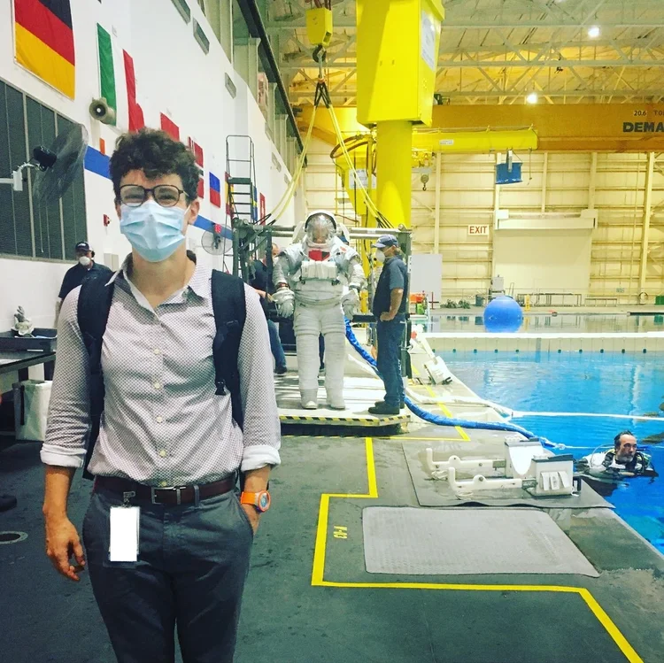

Hi, I'm
Katie Heinemann
Aerospace Engineer & Software Engineer with a passion for spaceflight, intelligent software, and human health.
An Engineer
on a Mission.
I build software for extreme environments — biometric IoT devices inside NASA EVA suits, AI platforms for regulated enterprise markets, and public health infrastructure serving CDC and NIH.
During the first 90 days of the pandemic I served as Planning Chief of the Johns Hopkins COVID-19 Command Center, coordinating a 600-person volunteer network that produced 16,000+ face shields for ICU frontline workers.
Before software, I commissioned water treatment plants across three continents for GE Power — from a $240.8M municipal upgrade in California to ultra-pure water systems for Micron's semiconductor fab in Singapore.

On the pool deck of the NBL!
What I Do
NASA & Spaceflight
Built the biometric IoT platform used to monitor astronauts in EVA suits at the NBL. Data co-author on publications shaping Artemis EVA planning. NASA Software of the Year honorable mention.
DevSecOps & AI
Unified LLM layer integrating 7 AI providers. SOC 2 Type I + II in 6 months. EKS disaster recovery with no downtime window. CI/CD re-architecture cutting build costs 50%.
Public Health
Wastewater epidemiology at Biobot Analytics serving CDC and NIH. Planning Chief of the JHU COVID-19 Command Center — 16,000+ face shields in 90 days.
Water Infrastructure
Commissioned water treatment plants across three continents — a $240.8M municipal upgrade, Micron's Singapore semiconductor fab, and Fortune 500 industrial facilities.
Education
BS Aerospace Engineering & Mechanics (UMN), MPH Johns Hopkins, Executive Space Course (ISU). 2024 University of Minnesota On The Rise Alumni Leader Award.
Giving Back
Offering web development and software services to nonprofits and socially-conscious organizations at reduced or pro bono rates.